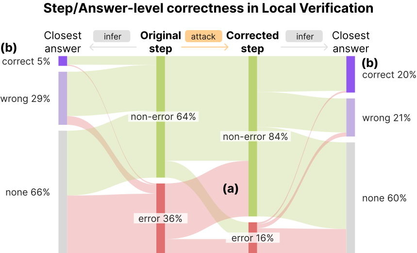
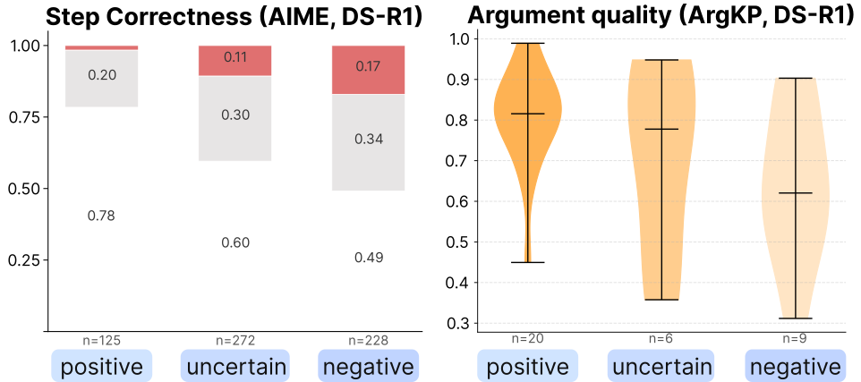
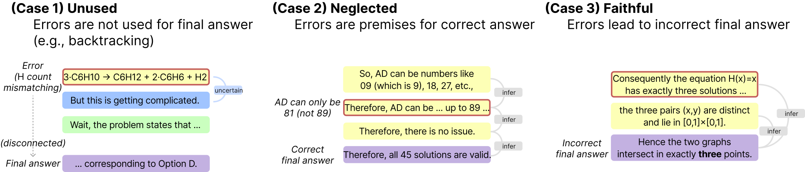
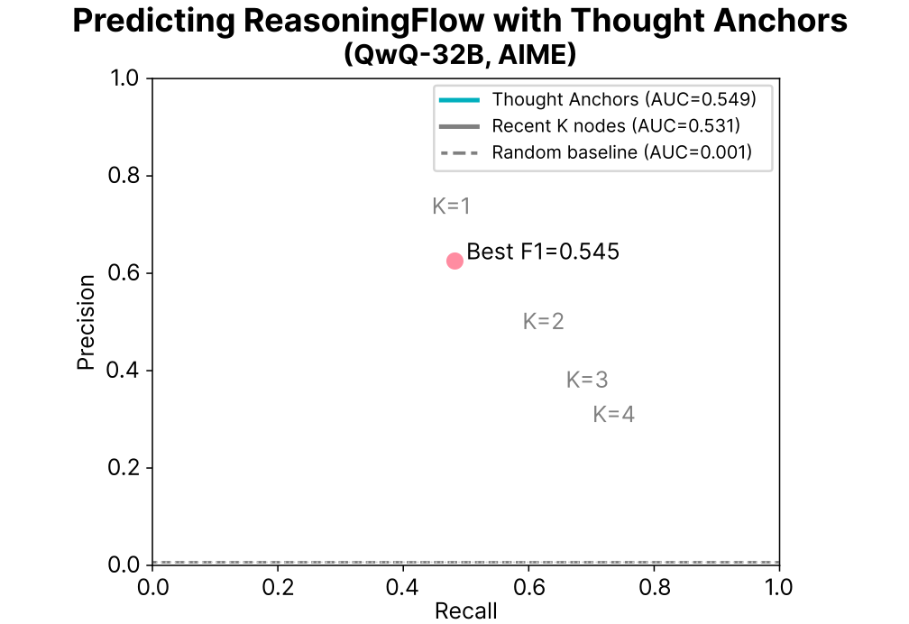

('26.10) EMNLP 2026 Main Conference
ReasoningFlow
Discourse Structures for Understanding LLM Reasoning Traces
ReasoningFlow is a dataset of LLM reasoning traces annotated as fine-grained directed acyclic graphs (DAGs), capturing the discourse structure of non-linear reasoning behaviors such as backtracking, self-correction, local verification, and assumption-scoping.
Overview
Large reasoning models (LRMs) produce long reasoning traces with rich internal structure that is difficult to evaluate or monitor at the sub-sentence level.
ReasoningFlow addresses this by converting raw reasoning traces into structured DAGs, where each node is an elementary reasoning step and each edge encodes a semantic relationship between steps.
Conference talk
Underline ↗Findings
Four observations enabled by the graph representation.
01 Local verification Local verification is universal across different LRMs and datasets, and happens more frequently than global verification of the final answer (19.1 times/trace vs. 6.1 times/trace).
Local verification is when the model detects a potential error mid-reasoning and corrects it within the next few steps. It is universal across different LRMs and datasets, and happens more frequently than global verification of the final answer.
Corrections with an attack edge are more likely to be correct reasoning steps, and are significantly more likely to be used to derive the correct final answer than their original statements. This observation shows that local verifications directly steer the following reasoning process towards the correct answer.

attack) affects subsequent reasoning. (a) Local verification, when used, corrects step-level errors (64% → 84%). (b) Corrected steps are more likely to be used to derive the correct final answer than original steps (20% vs. 5%).02 Self-reflection Positive reflection nodes are 78.1% correct; step correctness decreases to 66.2% for uncertain reflection and 45.6% for negative reflection.
Self-reflection consists of meta-evaluation of previous nodes (“Looks good”) or emotions/impressions (“but I am not sure.”). Three edge labels in ReasoningFlow—positive, uncertain, and negative—capture this behavior along with the reflection sentiment.
Similar trends are observed in argumentation quality: positive reflections are associated with stronger arguments, while uncertain/negative reflections indicate weaker arguments. Overall, this indicates that self-reflection phrases are not just fillers but reflect the node quality, opening up a new possibility for monitoring internal beliefs of LRMs.
Paper §6.2 ↗
03 Answer connectivity Only 14.4% of erroneous nodes propagate to incorrect final answers; 79.6% do not connect to the final answer, and 6.0% lead to a correct final answer.
Since ReasoningFlow tracks the premises of every step, we can determine whether a given step contributed to the final answer. The error may play no role in any subsequent conclusion (Unused), be used as a premise of a correct answer (Neglected), or propagate to produce an incorrect answer (Faithful).
These unused and neglected errors together prove that the logical link between reasoning errors and incorrect final answers is often weak, highlighting the unfaithfulness of LRMs in handling errors. Stepwise evaluation can be improved by incorporating the discourse structure of traces to track how errors propagate downstream.
Paper §7 ↗
04 Mechanistic interpretability Thought Anchors outperform the random baseline, but are not significantly better than greedily choosing the closest K nodes.
Thought Anchors proposes measuring the causal dependency between reasoning steps by masking attentions. It recomputes token probabilities after masking all tokens in an earlier step, and defines the causal dependency score as the average log KL-divergence between the probability distributions.
Thought Anchors outperform the random baseline, but are not significantly better compared to greedily choosing the closest K nodes. This indicates that the distance between two nodes is the primary driver of the positive correlation. Comparing Thought Anchors and ReasoningFlow reveals the discrepancy between text-level structures and their mechanistic interpretation.
Paper §8 ↗